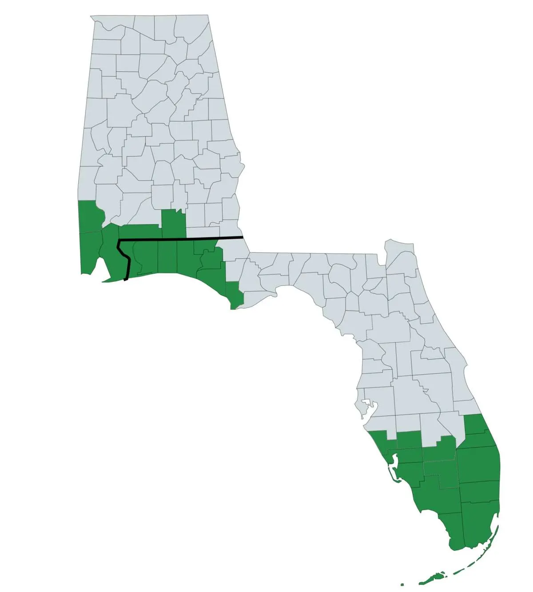

Cinergy Restoration provides support across the counties and service regions shown on this page, with a focus on fast response, clear communication, and organized project coordination. Our team handles restoration, remediation, and complete rebuild work with one connected process.
Florida and Alabama zip codes are loaded into this checker. Enter a 5-digit zip code to search. The map will display a pop-up message showing whether we currently serve that area.
